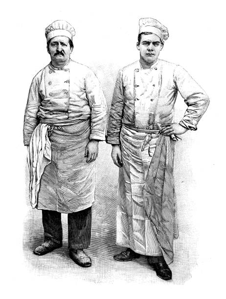

Introducción

La gastronomía del País Vasco es una de las más ricas y variadas de España...
Orígenes
La cocina vasca tiene sus raíces en la tradición agrícola...
Influencia Moderna
En las últimas décadas, la cocina vasca ha experimentado una revolución...